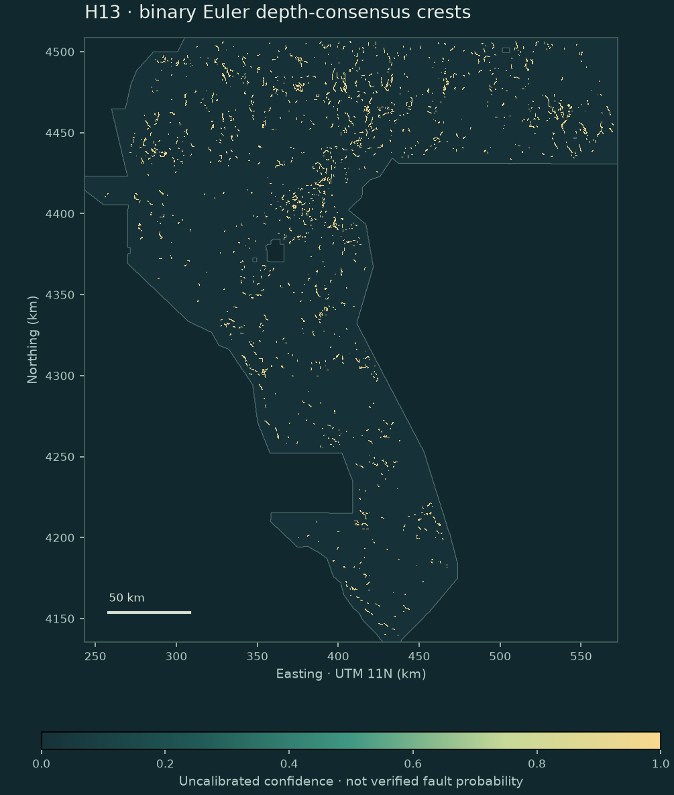

The H4 solution cloud.
46,656 QC-passed SI=0 contact solutions (offset A fitted) from TMI and gravity dG/dz; 20,617 carry cluster weights. Hash-pinned, never re-tuned.
SESSION 2 / EXPERIMENTS H8 + H13 / GEODAWN, NEVADA / 06 OCT 2026
Two new fault-confidence rasters from Euler source depths: a trace-locked continuous field (H8) and its value-concentrated crest emission (H13). Audited against all 343 prior artifacts and honestly gated.
HOLD — DO NOT SUBMIT363 KB · single-band float32 · EPSG:32611
100 m · 3,730 rows × 3,292 columns · values in [0, 1]
NaN only outside the sample footprint
Download the H8 continuous sibling (1.48 MB) ↓
Both pass format and full-corpus novelty. Both fail the off-catalogue proxy holdout — but both beat H33-B2 ~6× on the repaired catalogue-component holdout, the first non-circular skill signal for the Euler family. Research downloads; do not spend a weekly slot.

01 / FROM DEPTH CLOUD TO TRACE
46,656 QC-passed SI=0 contact solutions (offset A fitted) from TMI and gravity dG/dz; 20,617 carry cluster weights. Hash-pinned, never re-tuned.
A structure tensor orients the consensus field; crests survive only where ≥3 corridor solutions agree within 445 m of depth standard deviation along ±800 m of strike. 73.5 % of crests pass; median depth 770 m.
The metric charges 0.2·p(x) and pays ≤p(x)·k(d) — both linear in stored value. H13 emits 1.0 on consensus crests only: 5.8× the proxy DTI of the diluted H8 field, still below the gate.
02 / THE RESULT, WITHOUT THE SPIN
| Candidate | G1 | G2 | G3 (gate bar 0.091550) | G4 (vs H33-B2 0.003590) | Proxy DTI | CAT-HID mean |
|---|---|---|---|---|---|---|
| H13 · crest-binary | ✅ format | ✅ uniqueness | ❌ proxy holdout | ✅ CAT-HID | 0.019677 | 0.021464 |
| H8 · trace-locked KDE | ✅ format | ✅ uniqueness | ❌ proxy holdout | ✅ CAT-HID | 0.003371 | 0.023673 |
| H33-B2 · owner reference | Diagnostic comparator on the same instruments — not the owner-reported 0.2778 leaderboard score. | 0.091550 | 0.003590 | |||
| Frozen SGMC-derived incumbent | Circular on the SGMC proxy; upper bound of SGMC-matching, not a target. | 0.835907 | — | |||
Owner-derived SGMC proxy diagnostics, not organizer scores. CAT-HID was repaired this session (two latent defects made every historical reading zero); all candidates and baselines were re-measured under the repaired instrument.
03 / WHY THE PREVIOUS BEST HELPED
Byte-exact comparison proves H33-B2 is the 40,199-pixel reference with 2,545 catalogue-adjacent pixels removed. At DTI 0.2778 the metric lets you trade up to 0.0588 TP credit per FP unit saved (~17:1).
What 0.2778 does—and doesn’t—tell us ↗04 / KEEP THE RECORD CURRENT
Loading the dated USGS context snapshot…
CONCURRENT SESSION / EXPERIMENT H8-ASA
A parallel session registered a different H8 the same day: analytic-signal local-wavenumber depth cells (ASA/SPI family — tapered-FFT amplitude A=√(Tx²+Ty²+Tz²), contact depth z=√(A/|λ_min(Hessian A)|)), corroborated against the frozen H4 Euler cloud, KDE-smoothed into a continuous [0,1] field with a soft catalogue-flank ramp. To keep the two H8 lines distinct, its receipts live under h8asa-*.
3.60 MB · single-band float32 · EPSG:32611 · 3,730 × 3,292 · 100 m · all values in [0,1]
Name: GEMSDOE40-H8-ASA-SPI-b845d3ad449e · sha256 b00328ce401cf5be… (full hashes in validation / manifest)
| H8-ASA measurement | Result |
|---|---|
| Synthetic suite S1–S5 (before scoring) | PASS (10 tests) |
| Novelty vs 343 prior artifacts | PASS — max |Pearson| 0.2528, Jaccard 0.1121, containment 0.2016 |
| Registered gate: pooled proxy DTI > 0.091550 | FAIL — 0.024128 |
| Registered gate: ≥10/16 block wins | FAIL — 1/16 |
| Independent byte reproduction (all 4 artifacts) | PASS |
HOLD — DO NOT SUBMIT H8-ASA. Diagnosis: 155k confidence units pay false-positive cost far from truth (TP_w ≈ 2,205 vs FP_w ≈ 145,742 on the proxy), and the registered catalogue-flank ramp removes mass where the catalogue-like proxy lives. Preregistration + amendments · three-pass review · depth-cell cloud (CSV.gz)
EARLIER ARMS / PRESERVED, NOT REBRANDED
| Arm | Research files / record | Decision |
|---|---|---|
| H4 · contact-offset depth-KDE (session 1) | H4 GeoTIFF H4 result | HOLD. Proxy DTI 0.006902; 0/16 truth-bearing block wins. Its frozen solver output is the cloud H8/H13 re-use. |
| H7 · RTP Euler + gravity-gradient context | H7 GeoTIFF Record | HOLD. Uses the different 643cbe proxy version; do not mix its 0.000265 with 26d142 scores. |
| H40 · depth-cluster / dotted twins | NaN twin · zero-outside twin · receipt | HOLD — DO NOT SUBMIT H40. Promotion estimates withdrawn by that session; zero-outside is not the footprint contract. |
| H4-A · contact network + terrain | Negative result | Closed: 7.4× worse than chance on its own comparator. |
Unauthenticated file↔score attributions remain prohibited evidence, and its earlier calibration was withdrawn. The parallel instrument audit and attribution retraction are retained but not adopted as a promotion gate. Integration notes.